5. [Cours] : Introduction au framework Spring
Mots clés : architecture multicouche, Spring, injection de dépendances.
Spring est apparu en 2004 d'abord en tant que conteneur d'objets. Depuis, il a évolué en de multiple ramifications : Spring MVC, Spring Data, Spring Batch, ... [http://spring.io]. Nous ne présentons dans ce chapitre que le conteneur d'objets. Voici quelques points de repère :
- une application a de multiples classes et certaines d'entre-elles se partagent des objets qui doivent être uniques (singletons). Spring crée et gère ces singletons ;
- Spring place ces singletons dans une structure appelée contexte ;
- les classes ont accès aux singletons de l'application en les demandant à Spring via leur nom, leur type ou les deux ;
- Spring crée les singletons et gère leurs dépendances éventuelles : un singleton peut en effet avoir des références sur un ou plusieurs autres singletons. Lorsque Spring crée un singleton, il crée également leurs dépendances ;
- lorsqu'une application s'appuyant sur Spring démarre, elle peut demander à Spring de créer tous les singletons de l'application. Ceux-ci seront ensuite disponibles dans le contexte de Spring ;
- Spring facilite l'utilisation des architectures en couches et la programmation par interfaces. Dans les cas simples, chaque couche est implémentée par un singleton et implémente une interface. Si l'application travaille avec les interfaces des couches et non avec leurs classes d'implémentation, alors on obtient une architecture évolutive qui permet de changer l'implémentation d'une couche sans changer les autres grâce aux deux caractéristiques suivantes :
- l'application obtient une référence sur la couche via son nom. Spring lui délivre une référence sur la classe implémentant la couche ;
- l'application utilise cette référence comme celle de l'interface de la couche et non comme celle d'une classe ;
La déclaration des singletons peut être faite de trois façons qui peuvent être mixées :
- au sein d'un fichier XML,
- dans une classe spéciale de configuration ;
- avec toute classe à l'aide d'annotations ;
Nous présentons dans la suite trois exemples de configuration :
- [exemple-01] : configuration centralisée dans un unique fichier XML ;
- [exemple-02] : configuration centralisée dans une unique classe Java ;
- [exemple-03] : configuration distribuée sur plusieurs classes Java ;
Le dernier exemple [exemple-04] s'intéresse à la configuration Spring d'une architecture en couches. C'est l'exemple le plus important. C'est lui qui sera repris constamment pour configurer les architectures du document.
Ces quatre exemples posent les bases de ce qui suit :
- configuration Spring et injection de dépendances ;
- utilisation de Maven pour gérer les dépendances d'un projet ;
- utilisation de JUnit pour tester les projets ;
5.1. Support
| 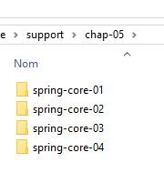 | 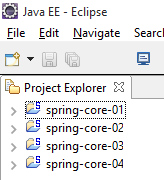 |
Le dossier [support / chap-05] contient les projets Eclipse de ce chapitre.
5.2. Exemple-01
5.2.1. Le projet Eclipse
| 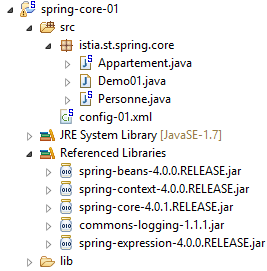 |
5.2.2. La classe [Personne]
| 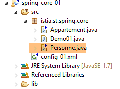 |
Note : les getters et setters peuvent être générés automatiquement de la façon suivante [1-2] :
| 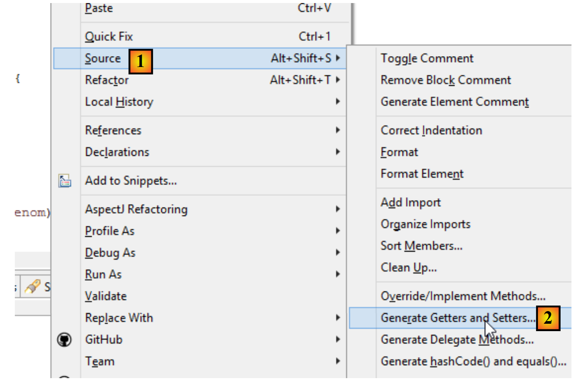 |
5.2.3. La classe [Appartement]
| 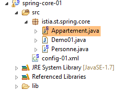 |
Note : cette classe n'a pas de constructeur explicite. Dans ce cas, existe toujours par défaut, le constructeur sans paramètres qui ne fait rien. Lorsqu'on crée des constructeurs, ce constructeur par défaut n'existe plus implicitement. Il faut alors le définir explicitement :
5.2.4. Le fichier de configuration de Spring
| 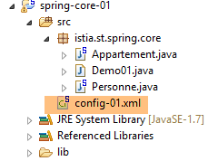 |
- lignes 2, 27 : les singletons sont définis au sein d'une balise <beans> ;
- lignes 6-10 : chaque singleton est défini par une balise <bean> ;
- ligne 6 : [id] est l'identifiant du singleton. [class] est le nom complet de la classe à instancier ;
- lignes 7-9 : les trois valeurs à passer au constructeur de la classe [Personne] ;
- lignes 12-16 : la classe [Personne] est d'abord créée avec son constructeur par défaut [new Personne()]. Puis pour chaque balise [property], un setter de la classe est utilisé. Par exemple pour la ligne 13, la méthode [setNom("martin")] va être exécutée. Il faut donc que la méthode [setNom] existe. C'est un point important à se rappeler ;
- lignes 18-21 : la balise <util:list> permet de définir un singleton qui est une liste ;
- ligne 19 : désigne le singleton [personne_01] défini ligne 6. On a là ce qu'on appelle une injection de dépendances. Deux attributs sont utilisables pour initialiser le champ d'un singleton :
- [value] : pour affecter au champ une valeur primitive (chaîne, nombre, date, ...),
- [ref] : pour affecter au champ la référence d'un objet Spring ;
Note : le fichier de configuration Spring peut être généré de la façon suivante [1-4] :
| 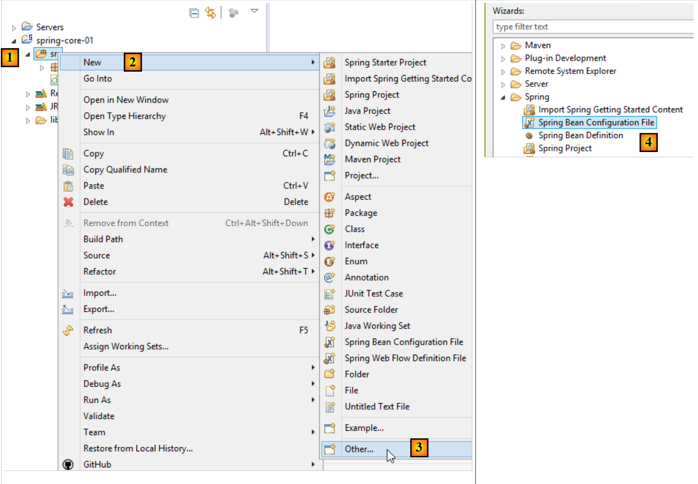 |
5.2.5. La classe exécutable
| 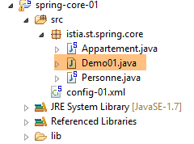 |
- ligne 14 : crée le contexte Spring. Tous les singletons définis dans le fichier [config-01.xml] sont alors instanciés ;
- ligne 16 : demande une référence sur le singleton identifié par [personne_01] de type [Personne]. Ce second paramètre est facultatif mais alors on reçoit une référence sur un type [Object], référence qu'il faut alors transtyper vers le type [Personne] ;
- ligne 19 : on n'utilise pas le nom du bean mais uniquement son type car il n'y a qu'un singleton de type [Appartement] ;
- ligne 18 : on a utilisé à la fois l'identifiant et le type du singleton désiré. L'identifiant est superflu puisque qu'il n'y a qu'un singleton de type [new ArrayList<Personne>().getClass()] ;
- lignes 32-33 : montrent que si on demande plusieurs fois le même singleton, on obtient bien toujours la même référence, montrant par là qu'on a bien affaire à un singleton. Ce point est important à comprendre ;
Note : une classe exécutable peut être générée de la façon suivante [1-6] :
| 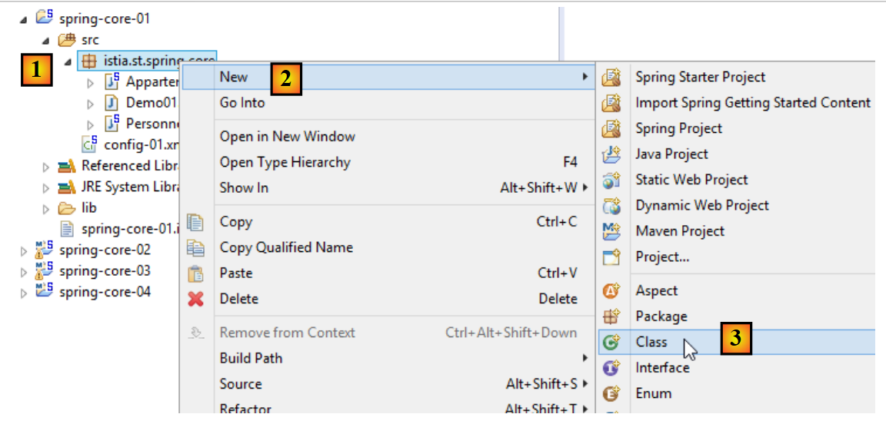 |
| 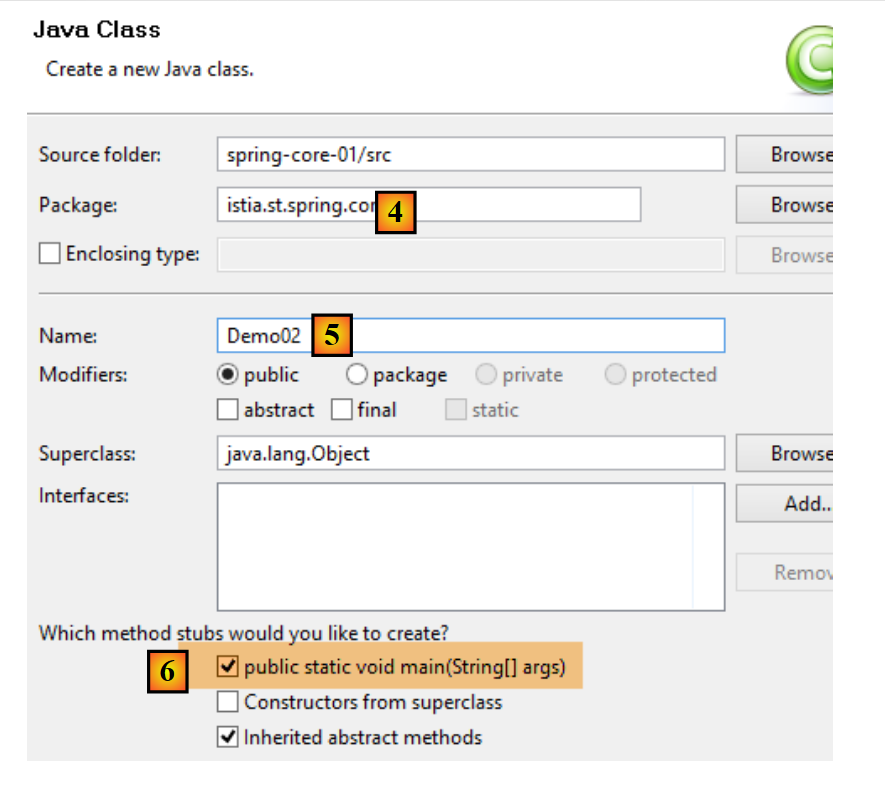 |
- c'est le fait de cocher [6] qui va faire que la classe générée va contenir une méthode statique [main] qui va la rendre exécutable ;
5.2.6. Les dépendances du projet
| 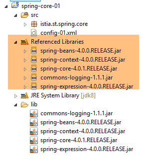 |
- dépendances Spring : [spring-core, spring-beans, spring-context, spring-expression, commons-logging] ;
Les dépendances sont ajoutées au projet de la façon suivante :
| 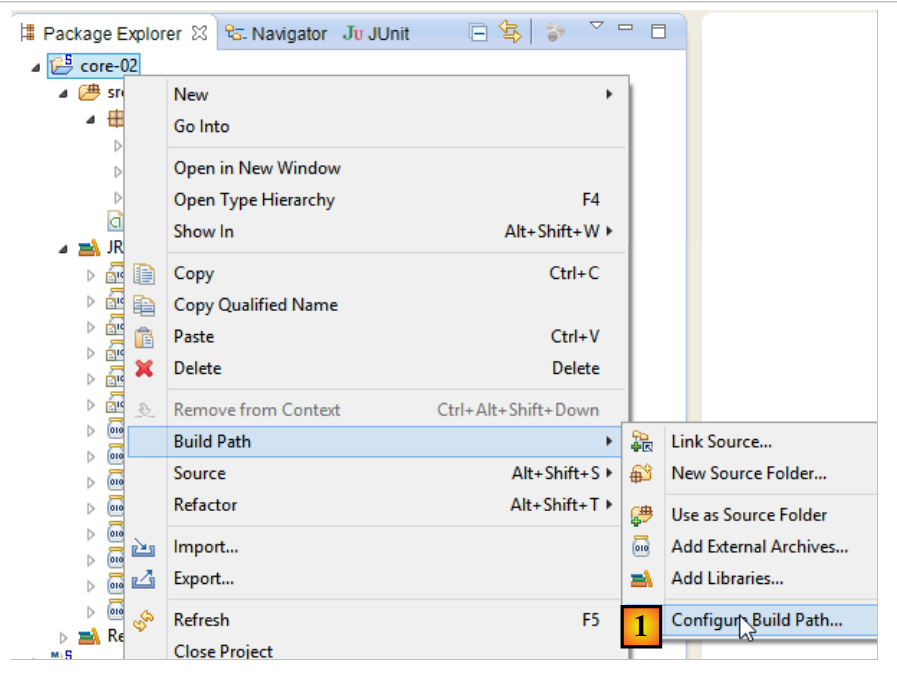 |
- en [1] : clic droit sur le projet / [Build Path] / [Configure Build Path] ;
| 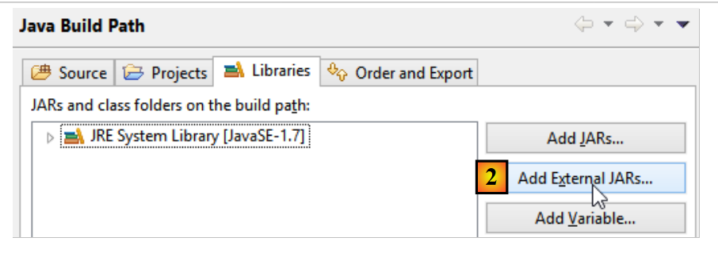 |
- en [2] : [Add JARs] si les JARs à ajouter sont dans un dossier du projet. Sinon [Add External JARs] ;
| 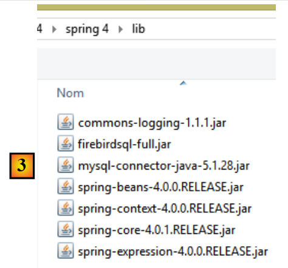 |
- en [3], sélectionnez les JARs à ajouter au ClassPath du projet (ils sont ici dans le dossier [lib] à l'intérieur du projet) ;
Définition : le [ClassPath] d'un projet est l'ensemble des dossiers explorés par la JVM (Java Virtual Machine) qui exécute le projet, pour trouver une classe référencée par celui-ci. Pour un projet Eclipse, le [ClassPath] est formé des éléments suivants :
- le dossier [bin] du projet ;
- les éléments du [Build Path] du projet ;
Le dossier [bin] est le dossier produit par la compilation du dossier [src]. Donc tout ce qui est placé dans le dossier [src] fait automatiquement partie du [ClassPath] (même si ce n'est pas un fichier .java). Donc dans le projet précédent, le fichier de configuration de spring [config-01.xml] qui est dans le dossier [src] fera partie du [Classpath] du projet à l'exécution.
5.2.7. Les résultats
5.3. Exemple-02
5.3.1. Le projet Eclipse
| 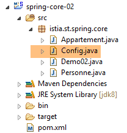 |
5.3.2. La classe de configuration de Spring
- ligne 9 : l'annotation [@Configuration] est une annotation Spring. Elle indique que la classe annotée définit des singletons. Ceux-ci sont définis à l'aide de l'annotation [@Bean]. Spring va exécuter toutes les méthodes annotées par [@Bean]. Celles-ci créent les singletons de l'application ;
- lignes 12-15 : définit un singleton identifié par [personne_01], ç-à-d le nom de la méthode.
- ligne 23 : les paramètres [personne_01, personne_02] portent les noms de singletons. Spring va automatiquement les initialiser avec les références de ces singletons. On parle d'injection de paramètres ;
Cette façon de configurer les singletons est plus explicite que celle qui utilise le fichier XML. En fait, on reproduit nous-mêmes ce que faisait Spring implicitement à partir du fichier XML.
5.3.3. La classe exécutable
| 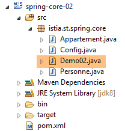 |
- la ligne 13 provoque l'instanciation de tous les beans définis dans la classe [Config] ;
- le reste du code ne change pas ;
5.3.4. Les dépendances du projet
| 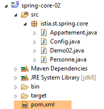 | 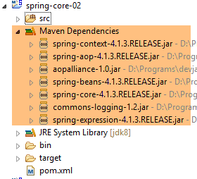 |
Les dépendances sont fixées par le fichier [pom.xml] suivant :
La gestion à la main des dépendances d'un projet devient un casse-tête lorsqu'on utilise des bibliothèques Java dont on ne connaît pas les dépendances. Ainsi le framework [Hibernate] qui gère l'accès aux bases de données a des dizaines de dépendances. Le projet [Maven] résoud ce problème. On nomme la dépendance dont on a besoin. Celle-ci est cherchée automatiquement dans des dépôts Maven répartis sur le net. Si la dépendance demandée a elle-même des dépendances, alors celles-ci sont automatiquement téléchargées également. Ces dépendances téléchargées sont stockées dans un dépôt local au poste. Si une autre application a besoin plus tard de la même dépendance, celle-ci ne sera pas téléchargée mais cherchée dans le dépôt local. Une dépendance est caractérisée par les éléments suivants :
- ligne 17 : une balise <dependency> ;
- ligne 18 : un attribut [groupId] qui identifie en général l'entreprise qui a créé la dépendance ;
- ligne 19 : un attribut [artifactId] qui identifie la dépendance ;
- ligne 20 : un attribut [version] qui identifie la version désirée ;
La génération du projet va elle-même produire un composant Maven défini par les lignes 4-8 :
- lignes 4-6 : les attributs [ groupId, artifactId,version] que nous venons de décrire ;
- lignes 7-8 : sont des attributs facultatifs ;
Nous allons revenir un peu plus loin sur le rôle des lignes 24-40. Pour transformer un projet Eclipse ordinaire en un projet Maven, il faut faire deux choses :
- créer le fichier [pom.xml] précédent ;
- déclarer que le projet est désormais un projet Maven [1-4] :
| 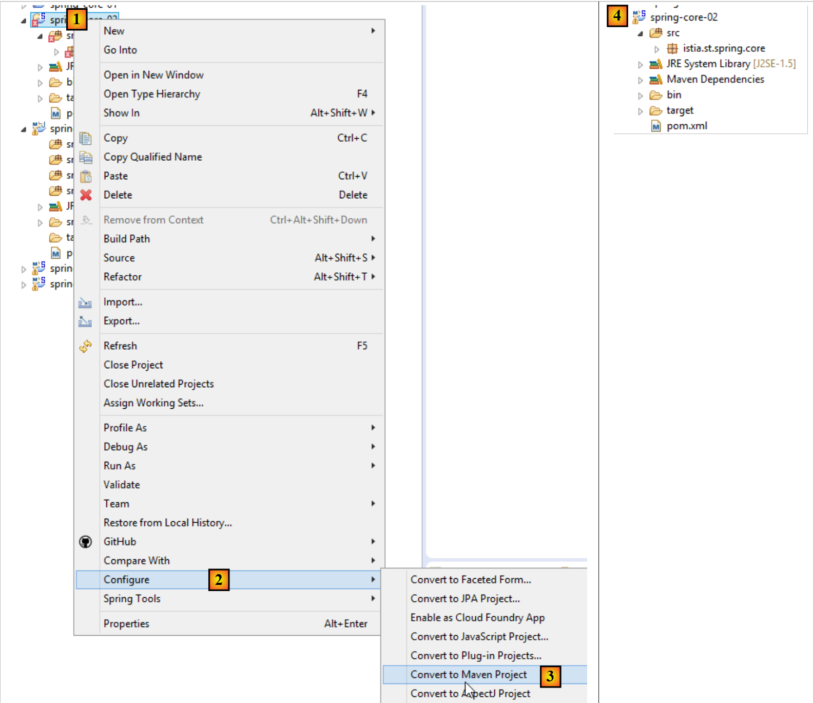 |
L'icône d'un projet Maven a un M [4]. Le S indique que le projet a des éléments Spring. Il est déconseillé de transformer (comme nous venons de le faire) un projet Eclipse en projet Maven car alors le projet n'a pas la structure attendue pour un projet Maven ce qui peut amener parfois des problèmes inattendus.
5.3.5. Génération de l'artifact Maven du projet
Nous appelons artifact Maven du projet, l'élément défini par les lignes 4-6 du fichier [pom.xml] :
Pour générer cet artifact, il faut que les lignes 3-7 suivantes soient présentes dans le fichier [pom.xml] :
Elles définissent le plugin de Maven capable de générer l'artifact du projet. On procéde ensuite de la façon suivante :
| 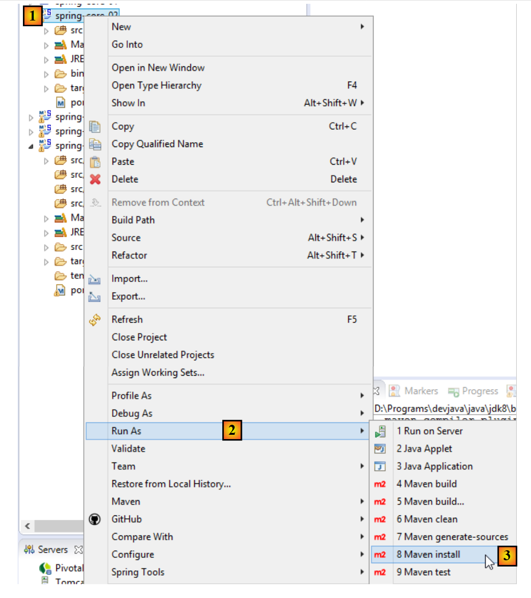 |
L'artifact ainsi généré va dans le dépôt Maven local. La localisation de celui-ci peut être trouvée dans la configuration d'Eclipse :
 |
Il est alors possible de vérifier la bonne installation de l'artifact Maven :
| 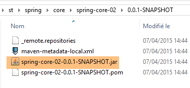 |
Désormais, un autre projet Maven local pourra utiliser cette archive.
5.4. Exemple-03
5.4.1. Le projet Eclipse
Nous créons cette fois un projet Maven [1-8] :
| 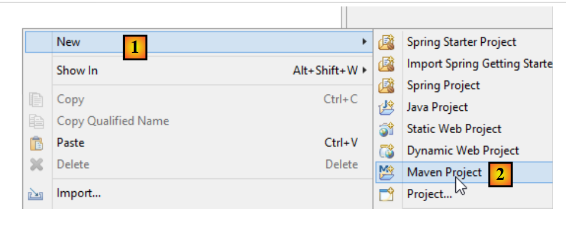 |
| 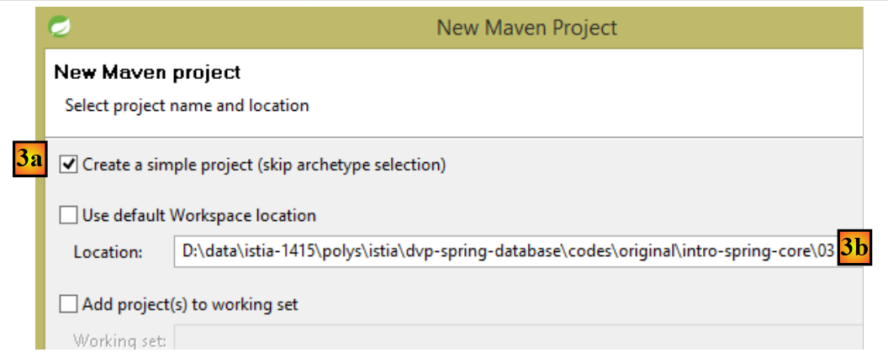 |
- en [3b] : désignez un dossier vide où sera généré le projet ;
| 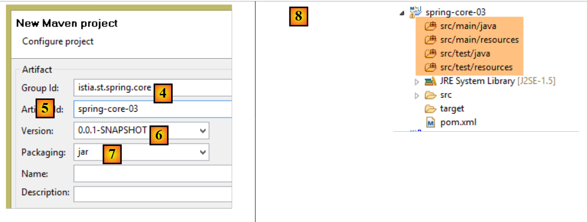 |
- en [4] : l'identifiant du groupe Maven auquel appartiendra le projet ;
- en [5] : le nom de l'artifact Maven produit :
- en [6] : sa version ;
- en [7]: son mode de packaging (il existe également war, ear, apk, ...) ;
- en [8] : le projet ainsi créé ;
Un projet Maven a par défaut, une arborescence précise :
- [src / main / java] : les codes source du projet. Les produits compilés de ces sources iront dans le dossier [target/classes] du projet ;
- [src / main / resources] : les ressources qui doivent être dans le Classpath du projet sans pour autant être des sources Java. Elles seront recopiées telles-quelles dans le dossier [target/classes] du projet ;
- [src / test / java] : les codes source des tests du projet. Les produits compilés de ces sources iront dans le dossier [target/test-classes] du projet. Ces éléments ne sont pas intégrés dans l'archive Maven du projet ;
- [src / test / resources] : les ressources qui doivent être dans le Classpath du projet pour les tests sans pour autant être des sources Java. Elles seront recopiées telles-quelles dans le dossier [target/test-classes] du projet ;
Nous complétons le projet de la façon suivante :
| 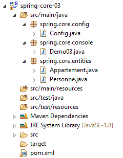 |
5.4.2. La configuration Maven
Un fichier [pom.xml] est généré par défaut. Nous le transformons de la façon suivante :
- ligne 11 : le projet est codé en UTF-8 ;
- ligne 12 : on utilise un JDK 1.8 pour compiler le projet ;
- lignes 16-20 : pour les projets utilisant les bibliothèques Spring, il est pratique d'utiliser un projet Maven parent appelé [spring-boot-starter-parent]. Celui-ci définit les versions de différentes bibliothèques Spring ainsi que celles de leurs dépendances. Ceci permet de ne plus les définir dans la définition des dépendances. Ainsi lignes 24-27 on ne précise pas la version de [spring-context] désirée. Ce sera celle définie par le projet parent [spring-boot-starter-parent]. Cette technique permet de ne pas se soucier d'éventuelles incompatibilités de versions entre dépendances. Celles définies par le projet parent sont compatibles entre-elles ;
- lignes 29-32 : Spring écrit un nombre important d'informations sur la console au travers d'une bibliothèque de logs. Celle-ci est importée ici ;
- lignes 40-47 : un plugin Maven sur lequel nous allons revenir ;
- lignes 50-52 : le plugin de génération de l'artifact Maven du projet ;
5.4.3. La classe de configuration de Spring
| 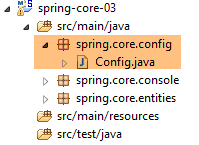 |
La classe [Config] est la suivante :
- on retrouve là un code déjà commenté avec deux nouveautés :
- ligne 13 : indique qu'il y a d'autres beans à instancier dans le package [spring.core.entities],
- lignes 34-37 : un bean [mySurface] ;
5.4.4. La classe [Appartement]
| 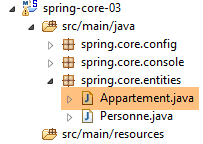 |
- ligne 7 : l'annotation [@Component] indique à Spring que la classe est un singleton que le framework doit instancier et gérer. C'est parce que dans la classe [Config], nous avons écrit [@ComponentScan({ "istia.st.spring.core.entities" })] que ce singleton va être trouvé ;
- ligne 11 : demande à Spring d'injecter dans le champ la référence d'un des singletons. Celui-ci peut être défini de deux façons :
- par son identifiant (lignes 12, 16),
- par son type s'il n'y a qu'un singleton ayant ce type ;
5.4.5. Exécution du projet
L'exécution du projet donne le résultat suivant dans la console :
- lignes 1-3 : Spring génère un très grand nombre de logs, plusieurs dizaines de lignes. Ces logs peuvent être très utiles pour déboguer un projet qui ne marche pas. Lorsqu'il fonctionne, on peut réduire les logs de la façon suivante :
| 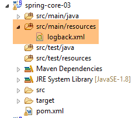 |
Dans le dossier [src / main / resources] on crée le fichier [logback.xml] suivant :
- ligne 12, on fixe le niveau des logs. [debug] est un niveau très détaillé, [info] beaucoup moins ;
Voici les résultats avec [level=info] :
Il n'y a plus qu'une ligne de logs.
5.4.6. Génération de l'archive du projet avec ses dépendances
L'archive créée dans le projet précédent peut être également utilisée par un projet Eclipse non Maven. Certains projets utilisent de nombreuses bibliothèques et il peut être délicat de ne pas en oublier. C'est là que Maven fait merveille car il suffit de nommer la dépendance de niveau le plus haut pour que les autres de niveau plus bas soient automatiquement ajoutées au Classpath du projet. Lorsque qu'un projet Eclipse non Maven doit utiliser les archives d'un projet Maven, il est possible de générer l'artifact de ce dernier avec toutes ses dépendances (ce qui n'était pas le cas dans le projet précédent). Pour cette génération, il faut que les lignes 3-10 suivantes soient présentes dans le fichier [pom.xml] :
Elles définissent le plugin de Maven capable de générer l'artifact du projet avec ses dépendances. Ensuite on procède de la façon suivante [1-6] :
 |
| 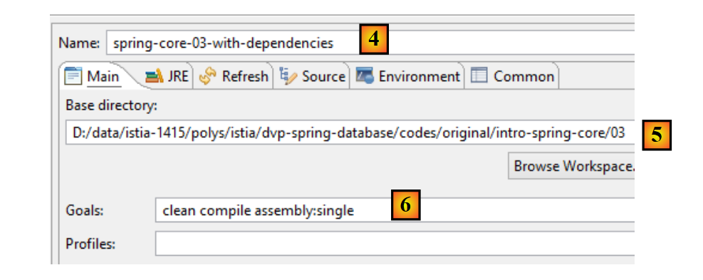 |
- [4-6] représentent une configuration d'exécution Maven ;
- en [4], mettre un nom quelconque ;
- en [5], désigner le dossier du projet ;
- en [6], mettre les cibles Maven (goals) :
- [clean] : le dossier [target] du projet est supprimé ;
- [compile] : le projet est compilé. Les produits de la compilation sont placés dans un dossier [target] régénéré ;
- [assembly:single] : les classes du projet et de ses dépendances sont placées dans une unique archive jar dans le dossier [target] ;
Après exécution, on obtient le résultat suivant :
| 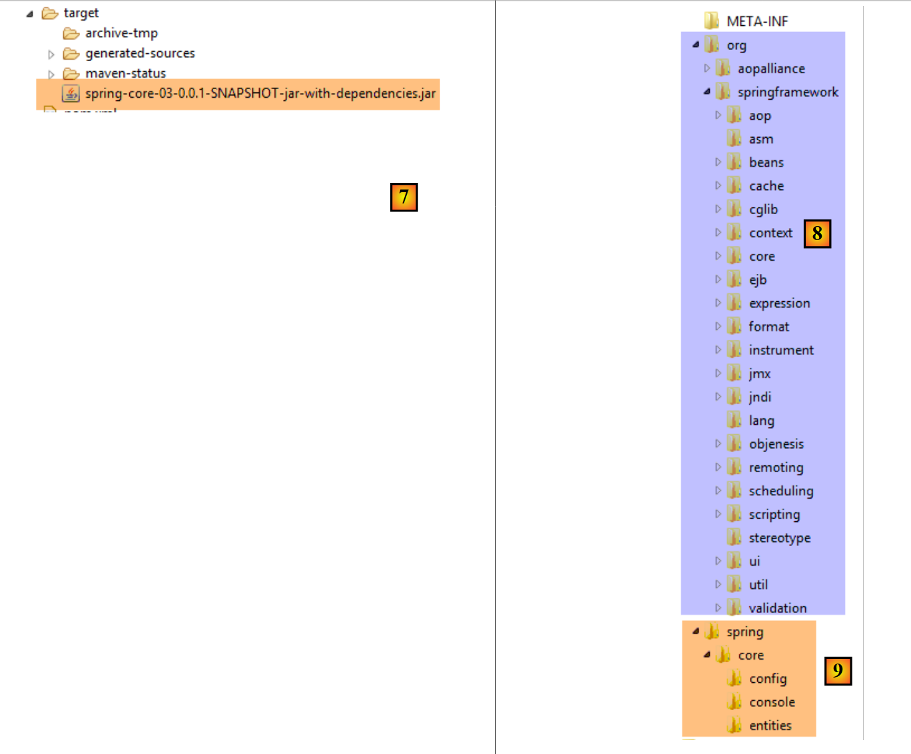 |
Une archive jar est un fichier zippé qu'on peut donc ouvrir avec un dézippeur. Une fois l'archive précédente dézippée, on obtient l'arborescence suivante :
- en [8], les classes des dépendances du projet ;
- en [9], les classes du projet lui-même ;
5.5. Exemple-04
5.5.1. Objectif
Cet exemple reprend l'un de ceux présentés dans le document [Introduction à Spring IoC] dans lequel on montre l'apport de Spring pour la configuration d'architectures multi-couche. Dans le document original, l'exemple est traité avec une configuration Spring faite avec un fichier XML. Ici nous traitons l'exemple avec une configuration par classes Java et annotations.
On veut ici configurer un projet Spring pour l'architecture suivante:
| 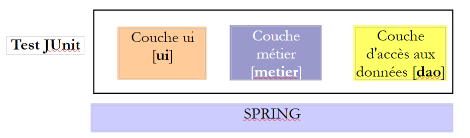 |
Chaque couche présente une interface implémentée avec deux classes. On veut montrer que grâce à Spring, on peut changer l'implémentation d'une couche avec un impact zéro sur le code des autres couches.
5.5.2. Le projet Eclipse
5.5.2.1. Génération
Nous créons un nouveau type de projet :
| 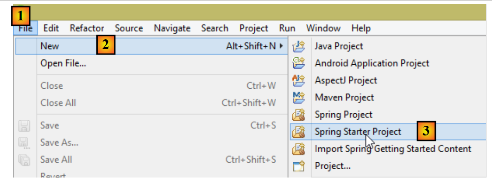 |
| 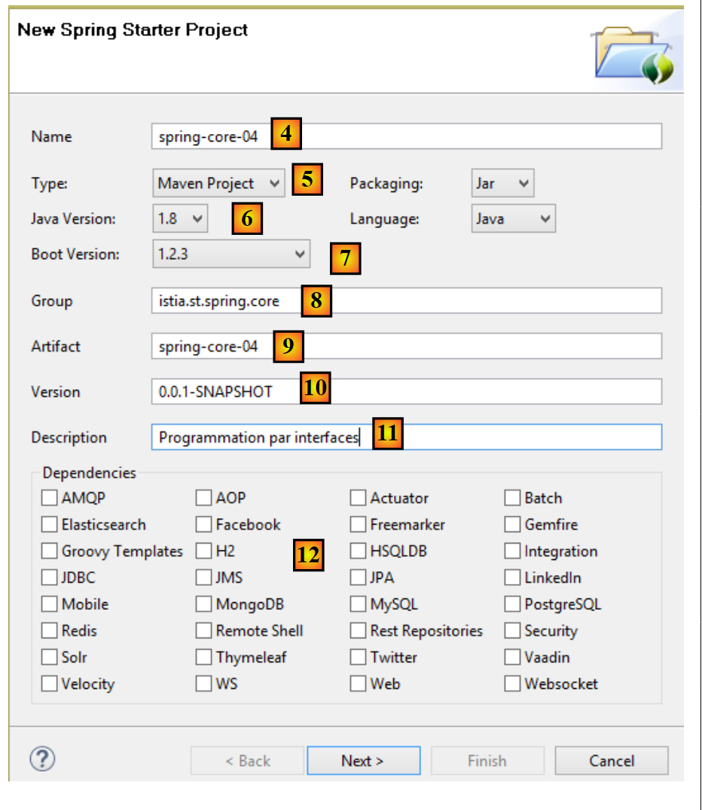 |
- en [4], mettre le nom du projet Eclipse ;
- en [5], choisir un projet Maven ;
- en [6], choisir une version de Java >=1.7 ;
- en [7], choisir la version de Spring Boot proposée ;
- les informations [8-11] sont des informations Maven ;
- en [12], on peut choisir une ou plusieurs des dépendances proposées. Cela va avoir pour effet d'intégrer dans le fichier [pom.xml] de Maven, un certain nombre de dépendances ;
| 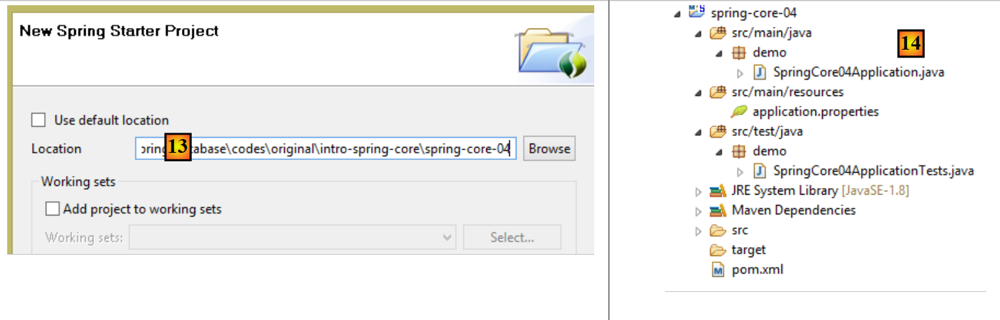 |
- en [13], désigner un dossier existant et vide pour accueillir le projet ;
- en [14], le projet généré. Nous allons en disséquer les éléments ;
Le projet est un projet Maven configuré par le fichier [pom.xml] suivant :
- lignes 6-12 : reprennent les informations saisies dans l'assistant de réation du projet ;
- lignes 14-19 : le projet Maven parent qui définit un certain nombre de bibliothèques avec leurs versions. Si l'une d'elles est une dépendance du projet, elle est mentionnée dans le fichier [pom.xml] sans sa version ;
- ligne 23 : cette ligne ne sert que si on a l'intention de générer une archive exécutable du projet. Elle est inutilisée sinon ;
- lignes 28-31 : la dépendance minimale d'un projet Spring Boot. On rappelle que nous n'avons sélectionné aucune dépendance dans la liste à cocher ;
- lignes 33-37 : la dépendance nécessaire pour gérer des tests unitaires JUnit [http://junit.org/] intégrés avec Spring. La ligne 36 indique que la dépendance n'est nécessaire que pour les tests. En conséquence, elle ne sera pas intégrée à l'archive du projet ;
- lignes 42-45 : le plugin qui permet de générer l'artifact Maven du projet ;
La liste des dépendances amenée par ce fichier est la suivante [1] :
| 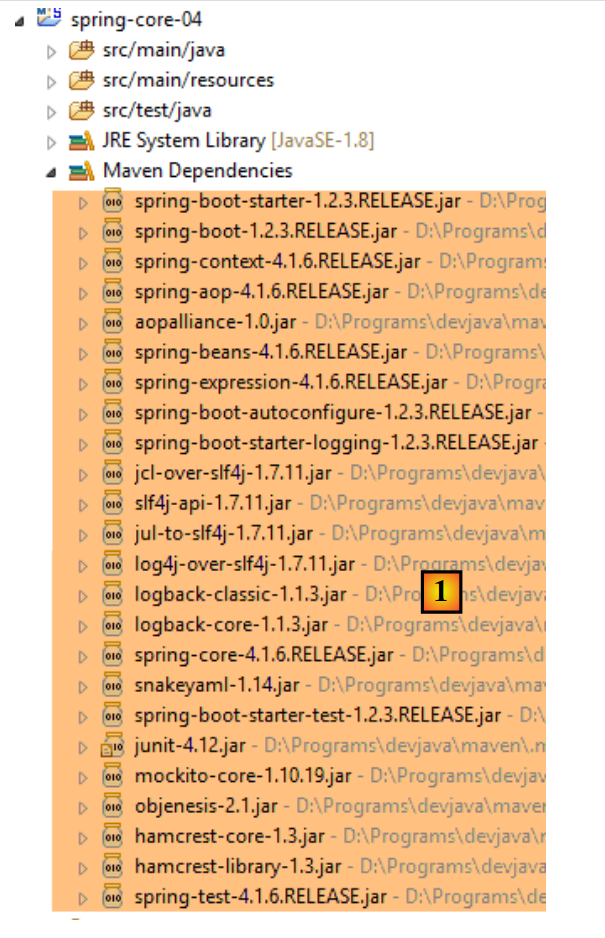 |
Nous allons voir qu'elles sont suffisantes pour ce qu'on veut faire ici.
5.5.2.2. La classe exécutable
| 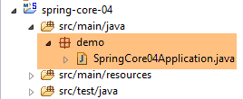 |
La classe exécutable [SpringCore04Application] [[2] est la suivante :
- ligne 6, l'annotation [@SpringBootApplication] est un raccourci pour les trois annotations [@Configuration, @EnableAutoConfiguration, @ComponentScan] ce qui signifie :
- que la classe [SpringCore04Application] est une classe de configuration Spring ;
- qu'il est demandé à Spring Boot d'opérer des configurations à partir des classes qu'il va trouver dans le Classpath du projet, donc ici dans les dépendances Maven ;
- d'examiner le dossier courant (celui de la classe [SpringCore04Application]) pour y trouver d'éventuels autres composants Spring ;
- ligne 10 : la méthode statique [SpringApplication.run] est exécutée. Son premier paramètre est une classe de configuration Spring, ici la classe [SpringCore04Application]. Son deuxième paramètre est ici la liste des arguments passés à la méthode [main] (ligne 9). La méthode statique [SpringApplication.run] a pour rôle de créer le contexte Spring, ç-à-d créer les différents beans trouvés soit dans les classes de configuration soit dans les dossiers explorés par l'annotation [@ComponentScan]. La méthode [main] ici ne fait rien d'autre. Pour lui donner un peu plus de substance, nous allons la transformer de la façon suivante :
- ligne 12 : la méthode statique [SpringApplication.run] rend le contexte Spring qu'elle a construit ;
- lignes 15-17 : on affiche le nom de tous les beans de ce contexte ;
On peut exécuter l'application de la façon suivante [1-3]. La méthode habituelle [Run As Java Application] est également valide.
| 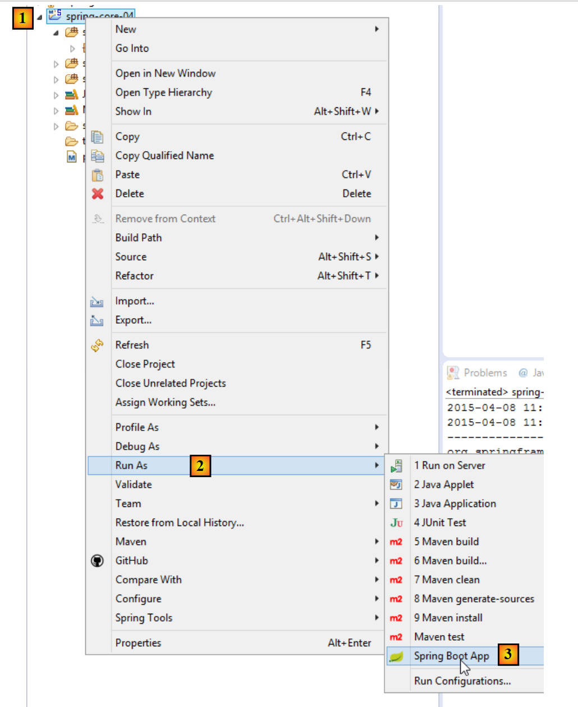 |
On obtient le résultat suivant :
- lignes 14-28 : les beans du contexte Spring. Nous ne connaissons pas leur rôle. Nous retrouvons le bean [springCore04Application] ligne 18 qui de par son annotation [@SpringBootApplication] devient automatiquement un bean Spring ;
- les autres lignes sont des logs de Spring de niveau [INFO]. Comme nous l'avons déjà vu, ces logs peuvent être contrôlés par le fichier [logback.xml] placé dans le Classpath du projet :
| 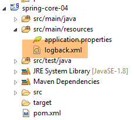 |
Si ligne 12 ci-dessus, on met le niveau [warn] à la place de [info], on obtient le résultat suivant :
Les logs ont disparu. N'apparaissent que les messages de niveau [warn] et ici il n'y en pas eu.
5.5.3. Implémentation des différentes couches de l'architecture
| 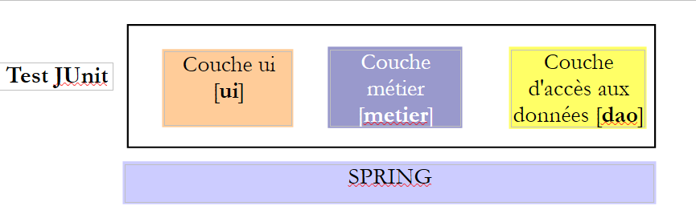 |
Nous allons maintenant implémenter les trois couches de l'architecture ci-dessus :
| 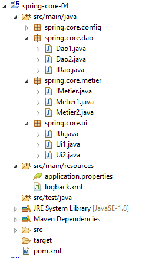 |
La couche [DAO] est implémentée par le package [spring.core.dao]. Elle présente l'interface [IDao] suivante :
Cette interface a deux implémentations : [Dao1] et [Dao2] :
La couche [métier] est implémentée par le package [spring.core.metier]. Elle présente l'interface [IMetier] suivante :
Cette interface a deux implémentations : [Metier1] et [Metier2] :
La couche [UI] est implémentée par le package [spring.core.ui]. Elle présente l'interface [IUi] suivante :
Cette interface a deux implémentations : [Ui1] et [Ui2] :
5.5.4. Configuration du projet Spring
| 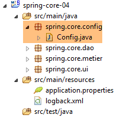 |
La classe de configuration [Config] est la suivante :
- lignes 20-23 : le bean nommé [dao1] (nom de la méthode) est une instance de la classe [Dao1] (ligne 22) considérée comme une implémentation de l'interface [IDao] (ligne 21). Le bean [dao1] est donc vu comme une instance d'interface (la terminologie est incorrecte mais elle peut se comprendre) et non une instance de classe. C'est un point important à comprendre. Tous les autres beans vont être eux aussi des instances d'interfaces ;
- lignes 25-30 : une instance de l'interface [IMetier] implémentée par la classe [Metier1] ;
- lignes 32-37 : une instance de l'interface [IUi] implémentée par la classe [Ui1] ;
- lignes 20-37 : implémentent les couches [UI, Metier, DAO] avec des instances [Ui1, Metier1, Dao1] ;
- lignes 40-57 : implémentent les couches [UI, Metier, DAO] avec des instances [Ui2, Metier2, Dao2] ;
5.5.5. Test unitaire [JUnitTest]
| 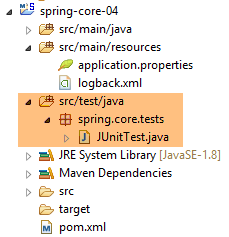 |
La classe [JUnitTest] est mise dans la branche [src / test / java] du projet Maven. Les éléments de cette branche ne sont pas placés dans l'archive finale du projet. Son code est le suivant :
- ligne 16 : l'annotation [@SpringApplicationConfiguration] est une annotation du projet Spring Boot Test (ligne 8). Elle est amenée par la dépendance suivante du fichier [pom.xml] :
Cette annotation a pour paramètre la liste des classes de configuration à utiliser pour construire le contexte Spring nécessaire au test. Ici nous utilisons la classe de configuration [Config] déjà présentée ;
- ligne 17 : l'annotation [@RunWith] est une annotation JUnit (ligne 5). Son paramètre est la classe chargée de conduire les tests à la place de la classe par défaut du framework Junit. Cette classe est une classe Spring (ligne 9). Elle va utiliser les annotations Spring présentes dans la classe de test ;
La classe complète est la suivante
- lignes 8-10 : on injecte (ligne 8) le bean nommé (ligne 9) [ui1]. On remarquera ligne 10 qu'on injecte une instance d'interface et non une instance de classe ;
- lignes 21-32 : on injecte de la même façon les autres beans définis dans la classe [Config] ;
- ligne 34 : l'annotation [@Test] désigne une méthode à exécuter au cours des tests. Les autres annotations possibles sont les suivantes :
- [@BeforeClass] : méthode à exécuter avant de commencer les tests ;
- [@AfterClass] : méthode à exécuter une fois tous les tests faits ;
- [@Before] : méthode à exécuter avant chaque test ;
- [@After] : méthode à exécuter après chaque test ;
- line 36 : on vérifie que l'appel [dao1.doSomethingInDaoLayer(10, 20)] rend bien 30. Le premier paramètre est par convention, la valeur attendue et le second la valeur réelle ;
- ligne 36 : teste l'instance [dao1] de l'interface [IDao] ;
- ligne 37 : teste l'instance [dao2] de l'interface [IDao] ;
- ligne 42 : teste l'instance [metier1] de l'interface [IMetier] ;
- ligne 43 : teste l'instance [metier2] de l'interface [IMetier] ;
- ligne 48 : teste l'instance [ui1] de l'interface [IUi] ;
- ligne 36 : teste l'instance [ui2] de l'interface [IUi] ;
Les assertions utilisables dans une méthode de test sont les suivantes :
- assertEquals(expression1, expression2) : vérifie que les valeurs des deux expressions sont égales. De nombreux types d'expression sont acceptés (int, String, float, double, boolean, char, short). Si les deux expressions ne sont pas égales, alors une exception de type [AssertionFailedError ] est lancée,
- assertEquals(réel1, réel2, delta) : vérifie que deux réels sont égaux à delta près, c.a.d abs(réel1-réel2)<=delta. On pourra écrire par exemple assertEquals(réel1, réel2, 1E-6) pour vérifier que deux valeurs sont égales à 10-6 près,
- assertEquals(message, expression1, expression2) et assertEquals(message, réel1, réel2, delta) sont des variantes permettant de préciser le message d'erreur à associer à l'exception de type [AssertionFailedError] lancée lorsque la méthode [assertEquals] échoue,
- assertNotNull(Object) et assertNotNull(message, Object) : vérifie que la référence Object n'est pas égale à null,
- assertNull(Object) et assertNull(message, Object) : vérifie que la référence Object est égale à null,
- assertSame(Object1, Object2) et assertSame(message, Object1, Object2) : vérifie que les références Object1 et Object2 pointent sur le même objet,
- assertNotSame(Object1, Object2) et assertNotSame(message, Object1, Object2) : vérifie que les références Object1 et Object2 ne pointent pas sur le même objet ;
Pour exécuter le test, on peut procéder de la façon suivante :
| 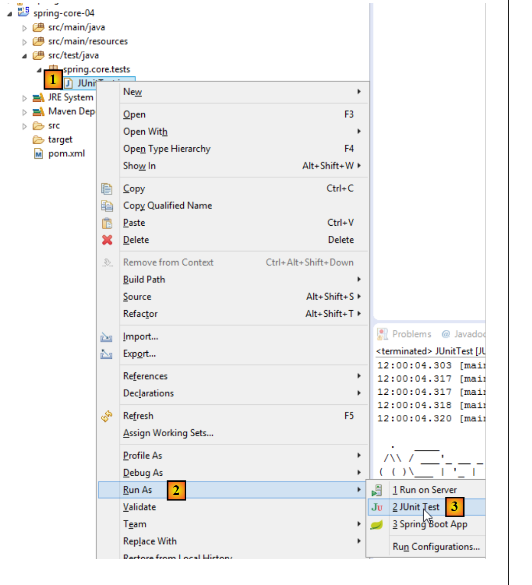 |
On obtient le résultat suivant :
| 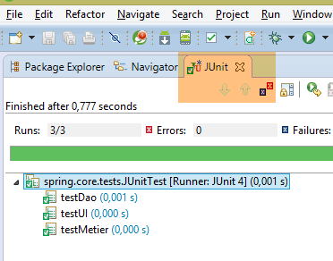 |
Ici tous les test ont réussi. Au fait que montre cet exemple ? Il montre la souplesse apportée par le framework Spring dans la configuration d'une architecture en couches. On peut décider d'utiliser l'implémentation [Ui1, Metier1, Dao1] ou [Ui2, Metier2, Dao2] simplement par configuration. Ainsi dans le test JUnit précédent, si on ne garde que l'injection des beans [ui1, metier1, dao1] on travaille avec la 1ère architecture. Pour changer d'architecture, il suffit de changer les beans injectés. Cela se fait sans changement de code des couches implémentant les interfaces. On appelle ce type de programmation, programmation par interfaces car on n'utilise pas les instances des classes implémentant les couches mais les instances de leurs interfaces.
5.6. Conclusion
- Spring gère des objets qui sont des singletons (un seul exemplaire). Spring gère également des objets qui sont instanciés à chaque fois qu'on en demande une instance à Spring. Ce cas sera également présenté dans ce document ;
- ces objets peuvent être déclarés de diverses façons qui peuvent être mixées :
- dans un fichier XML,
- dans une classe Java annotée par [@Configuration],
- avec n'importe quelle classe Java annotée par [@Component, @Service, ...] ;
- un objet Spring peut être injecté dans un autre objet Spring avec l'annotation [@Autowired]. On parle alors d'injection de dépendances (DI : Dependency Injection) ;
- Spring se montre très pratique pour configurer des architectures en couches avec l'utilisation conjointe du paradigme de de la programmation par interfaces ;